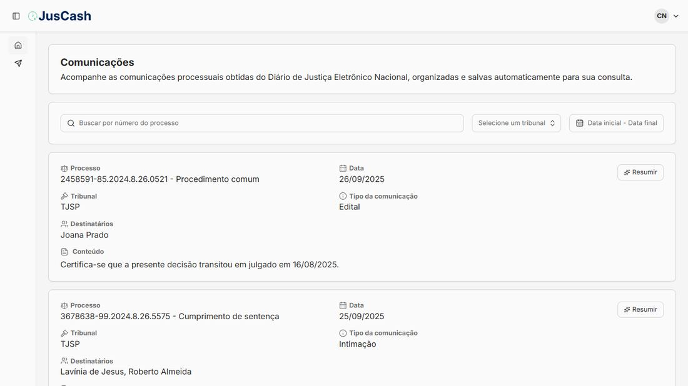
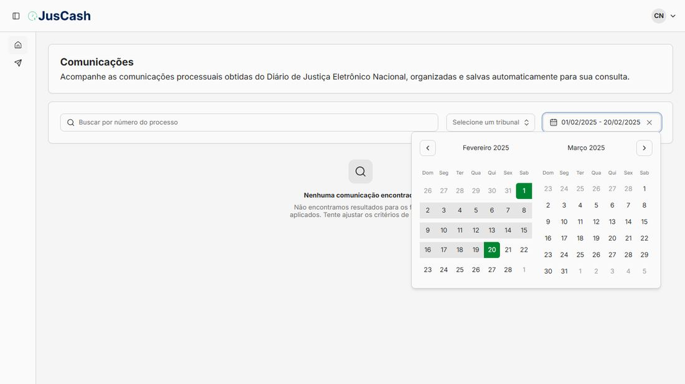
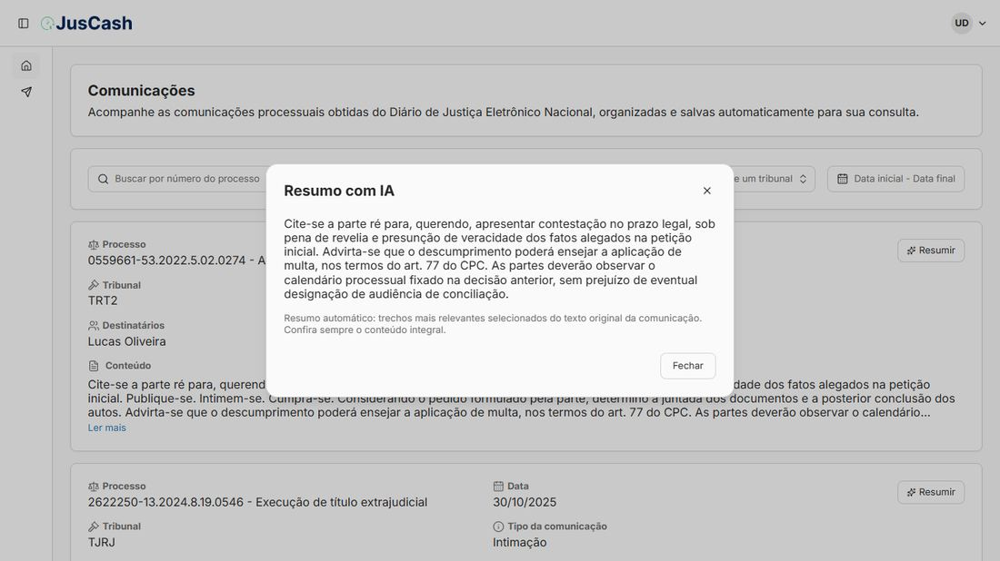
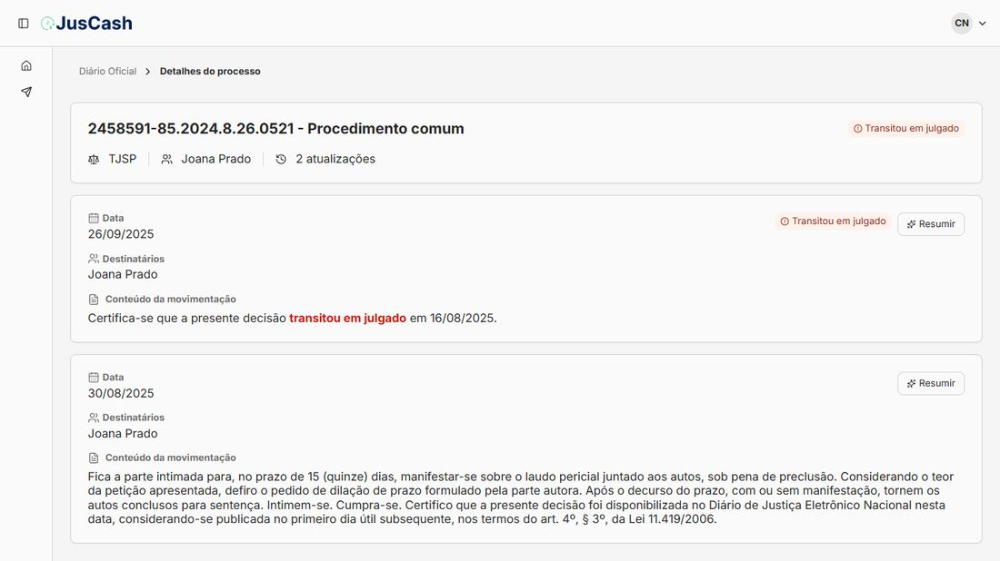
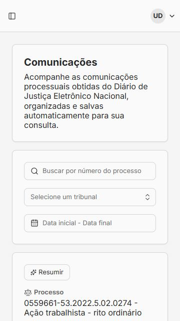
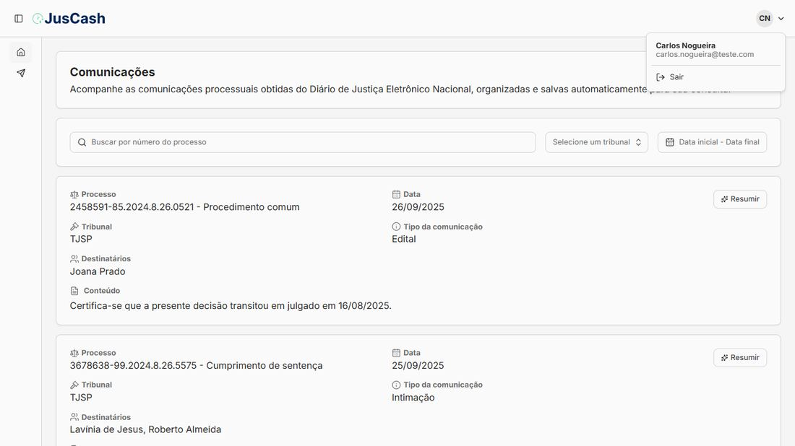

Como criar sua conta, entrar e acompanhar as comunicações processuais publicadas no
Diário de Justiça Eletrônico Nacional.
Versão 1.0 · novembro de 2026
Sumário
O que é o JusCash Comunicações
Criar sua conta
Entrar no sistema
Consultar comunicações
Filtrar comunicações
Ler o conteúdo completo e gerar um resumo
Ver os detalhes de um processo
Usar no celular
Sair do sistema
Dúvidas frequentes
1. O que é o JusCash Comunicações
O JusCash Comunicações reúne, num só lugar, as comunicações processuais
— intimações, citações e editais — publicadas no Diário de Justiça Eletrônico Nacional (DJEN).
Com ele você:
consulta as comunicações mais recentes primeiro;
encontra rapidamente o que procura pelo número do processo, pelo
tribunal ou pelo período de publicação;
vê todas as movimentações de um processo e identifica quando ele transitou em
julgado;
gera um resumo do conteúdo de uma comunicação, com destaque para prazos e
audiências.
O sistema funciona no navegador do computador, do tablet ou do celular. Não é preciso
instalar nada. Acesse:
https://desafio-fs2-dr-2511.vercel.app
Se o sistema ficou um tempo sem uso, o primeiro acesso pode levar até um minuto para carregar.
2. Criar sua conta
Na tela de entrada, clique em Cadastre-se.
Preencha Nome completo, E-mail, Senha
e Confirme sua senha.
Clique em Criar conta. Você entra no sistema automaticamente.
Tela de cadastro.
Regras e mensagens
Mensagem
O que fazer
Informe um e-mail válido.
Confira o e-mail (ex.: nome@escritorio.com.br).
A senha deve ter no mínimo 8 caracteres.
Use uma senha com pelo menos 8 caracteres.
As senhas não coincidem.
Digite a mesma senha nos dois campos.
Este e-mail já está cadastrado.
Use a opção Entrar com esse e-mail.
Clique no ícone de olho ao lado da senha para mostrar ou ocultar o que você digitou.
3. Entrar no sistema
Informe seu E-mail e sua Senha.
Clique em Entrar. Enquanto o sistema confere os dados, o botão mostra um
indicador de carregamento.
Tela de entrada.
Se o e-mail ou a senha estiverem errados, os campos ficam em vermelho e aparece a mensagem
“E-mail ou senha incorretos. Verifique os dados e tente novamente.”
E-mail ou senha incorretos.
Por segurança, o sistema não informa se o erro está no e-mail ou na senha.
4. Consultar comunicações
Depois de entrar, você chega à tela Comunicações. Elas aparecem da mais
recente para a mais antiga, 10 por página. Cada cartão mostra:
Processo: número e classe (ex.: Procedimento comum);
Data de disponibilização no Diário;
Tribunal e Tipo da comunicação (intimação, citação, edital);
Destinatários e o Conteúdo.

Tela de comunicações.
Use Anterior, Próximo ou os números no fim da lista para
trocar de página.
Enquanto os dados carregam, a tela mostra blocos cinza no lugar do conteúdo.
Se nenhuma comunicação corresponder aos filtros, aparece “Nenhuma comunicação
encontrada”. Se houver uma falha de conexão, clique em Tentar novamente.
5. Filtrar comunicações
Os filtros ficam no topo da tela e podem ser combinados.
Por número do processo
Digite o número no campo Buscar por número do processo. A máscara
(0000000-00.0000.0.00.0000) é aplicada enquanto você digita, e a busca acontece
assim que os 20 dígitos estão completos. Para limpar, apague o campo.
Por tribunal
Escolha a sigla em Selecione um tribunal. Para ver todos de novo, escolha
Selecione um tribunal na lista.
Por período
Clique em Data inicial - Data final. Abre um calendário com dois meses.
Use as setas para navegar entre os meses.
Clique na data inicial e depois na data final. O período
fica destacado e o filtro é aplicado.
Para remover o período, clique no X ao lado das datas.

Período selecionado: datas inicial e final em verde, dias intermediários em cinza.
Os filtros ficam no endereço da página: você pode salvar o link nos favoritos ou
enviá-lo a um colega, e a mesma busca será aberta.
6. Ler o conteúdo completo e gerar um resumo
Conteúdos longos aparecem resumidos em três linhas. Clique em Ler mais para ver
o texto completo e em Ler menos para recolher.
Resumo
Clique em Resumir no cartão. Abre uma janela com:
destaques encontrados no texto, como Prazo: 15 dias ou a data de
uma audiência;
as frases mais relevantes da comunicação.

Resumo de uma comunicação.
O resumo é gerado automaticamente a partir de trechos do texto original e serve
para uma leitura rápida. Confira sempre o conteúdo integral antes de tomar
decisões sobre prazos.
7. Ver os detalhes de um processo
Clique em qualquer parte de um cartão (ou no número do processo). Os botões
Ler mais e Resumir mantêm as próprias ações, e selecionar um
trecho do texto para copiar não sai da lista. A tela Detalhes do processo mostra:
número, classe, tribunal, destinatários e quantidade de atualizações;
o selo Transitou em julgado, quando alguma comunicação do processo indica o
trânsito em julgado;
todas as movimentações, com o conteúdo completo. A expressão “transitou em julgado” aparece
destacada em vermelho.

Detalhes do processo.
Para voltar, clique em Diário Oficial no topo da tela.
8. Usar no celular
No celular, a tela se reorganiza para caber na largura:
os filtros ficam um embaixo do outro;
o botão Resumir fica no topo de cada cartão;
o menu lateral abre pelo botão no canto superior esquerdo.

Comunicações no celular.
9. Sair do sistema
Clique no círculo com suas iniciais, no canto superior direito, e depois em
Sair.

Menu do usuário com nome, e-mail e a opção Sair.
10. Dúvidas frequentes
Digitei o número do processo e nada aconteceu.
A busca só começa com os 20 dígitos completos. Abaixo do campo aparece a dica
“Digite os 20 dígitos do número CNJ para buscar.” enquanto o número estiver incompleto.
Fui levado para a tela de entrada sem clicar em Sair.
Sua sessão expira depois de um tempo, por segurança. Entre novamente: você volta para a página
em que estava.
Apareceu “Nenhuma comunicação encontrada”.
Não há comunicações com os filtros escolhidos. Tente ampliar o período, trocar o tribunal ou
apagar o número do processo.
Apareceu “Não foi possível carregar as comunicações”.
Houve uma falha temporária de conexão. Clique em Tentar novamente.